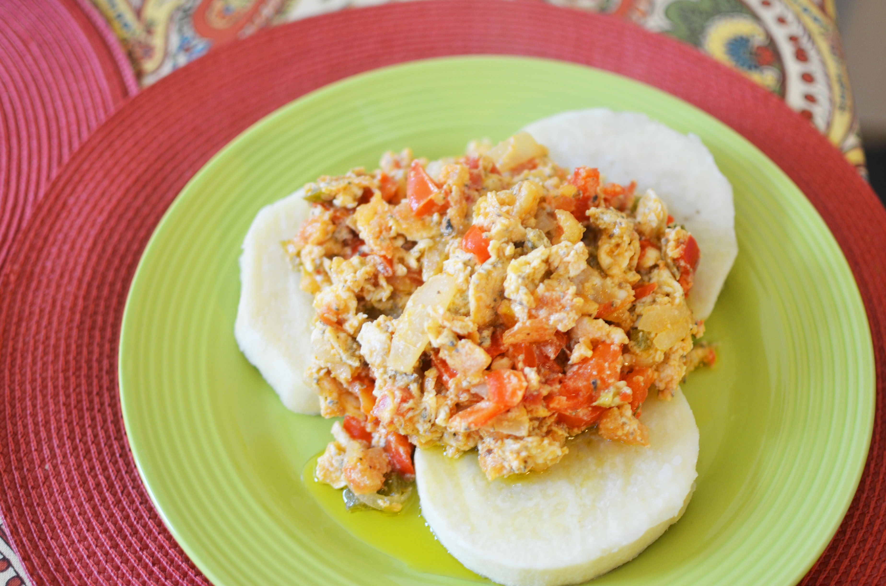

Odin Recipes
Yam and Egg

Description
Yam and egg is a simple meal made by boiling yam and cooking eggs. The yam
is
peeled, cut into chunks, and boiled until tender. The eggs are scrambled
or fried
and then served with the boiled yam. It’s a quick and nutritious dish
often
enjoyed for breakfast or as a light meal.
Ingredients
- Yam
- Eggs
- oil
- Salt
- pepper
- Water
Steps
-
Prepare the Yam: Peel and cut yam into
chunks.
-
Boil the Yam: Place yam chunks in a pot,
cover with water, and add a pinch
of salt. Boil until tender,
about 10-15 minutes. Drain and set aside.
-
Cook the Eggs: In a pan, heat some oil.
Crack the eggs into the pan and
scramble or cook them to your
preference. Season with salt and pepper.
-
Serve: Arrange the boiled yam chunks on a
plate and top with the cooked
eggs. Enjoy!
More Recipes
Bread and Beans
Jollof Rice